Illusion of Abyss (Español)
Quest Principal
| Requisitos | |
|---|---|
| Nivel Base: | 150 |
| Lugar de Inicio: | alberta 226/28 |
| Recompensas | |
| Experiencia: | 90,000,000 (Base) y 60,000,000 (Job) |
| Items: | 5  Illusion Stones Illusion Stones
|
- Habla con Knight Aylvar (
alberta 226/28) para iniciar la quest. Puedes llegar directamente usando el Warper > Illusion Dungeons > Illusion of Abyss. Su amigo ha desaparecido y quiere que examinemos una Piece of Turtle Shell. - Ya dentro del dungeon, habla con Girl que se encuentra a tu lado (
tur_d03_i 139/186) y elige All right, I'll go. I'll ask a few questions.

Nos indica 4 puntos en el mapa que debemos investigar.
- 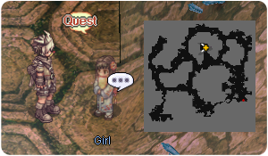
- Habla con Impatient Man en el área izquierda del mapa, cerca de (
tur_d03_i 80/180). - Habla con Soldier en el área derecha del mapa, cerca de (
tur_d03_i 235/187). - Dirígete al segundo piso del dungeon, el warp se encuentra en la parte inferior derecha del mapa.
- Habla con Fragile Woman en el centro del mapa, cerca de (
tur_d04_i 97/112).- 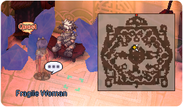
- Finalmente, habla con Archaeologist Leiphen en la parte superior derecha del segundo piso de este dungeon (
tur_d04_i 26/167). - Te pedirá completar las siguientes tareas:
- Cazar 10 Ominous Permeter.
- Cazar 10 Ominous Freezer.
- Cazar 10 Ominous Solider.
- Cazar 10 Ominous Heater.
- Reunir 10
 Rotten Meats.
Rotten Meats.
- Una vez hayas terminado, regresa y habla con el.
- Regresa con Fragile Woman y habla con ella.
- Habla con Girl en la entrada del dungeon. Ella está ordenando sus pensamientos.
- Habla con ella de nuevo. Descubriremos que su nombre es Narin.
- Habla con ella una tercera vez. Serás recompensado con un poco de experiencia y 5 Illusion Stones.
Has desbloqueado todas las Quest Diarias de Illusion of Abyss. El primer cooldown global de las Quest ha sido removido en NovaRO.


Quest Diarias
Remember not to Forget
| Requisitos | |
|---|---|
| Nivel Base: | 150 |
| Lugar de Inicio: | tur_d03_i 139/186 |
| Recompensas | |
| Experiencia: | 30,000,000 (Base) y 25,000,000 (Job) |
| Items: | 3 Illusion Stones
|
- Habla con Girl y escoge You asked me to do something para aceptar su misión.
- Habla con Leiphen en el segundo piso del dungeon, en la parte superior izquierda del mapa.
- Regresa con Girl para recibir tu recompensa.
Empty Desire
| Requisitos | |
|---|---|
| Nivel Base: | 150 |
| Lugar de Inicio: | tur_d03_i 235/187 |
| Recompensas | |
| Experiencia: | 30,000,000 (Base) y 25,000,000 (Job) |
| Items: | 3 Illusion Stones
|
- Habla con Soldier y elige I'll take a look para aceptar la quest.
- Necesitarás reunir y cazar lo siguiente:
- 10 Ominous Assaulter
- 5 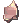 Old Metal Pieces (obtained from killing Ominous Assaulter)
- Regresa con Soldier para recibir tu recompensa.
Endless Hunger
| Requisitos | |
|---|---|
| Nivel Base: | 150 |
| Lugar de Inicio: | tur_d04_i 97/112 |
| Recompensas | |
| Experiencia: | 30,000,000 (Base) y 25,000,000 (Job) |
| Items: | 3 Illusion Stones
|
- Habla con Fragile Woman y escoge I'll be back para aceptar la quest.
- Necesitarás reunir y cazar lo siguiente:
- 10 Ominous Permeter
- 10 Ominous Freezer
- 10 Ominous Solider
- 10 Ominous Heater
- 10 Rotten Meat
- Regresa con Fragile Woman para recibir tu recompensa.
Daily Quest Reset

Como mecánica exclusiva de NovaRO, puedes reiniciar los cooldowns de tus daily quests.
Esto significa que eres capaz de farmear cuantas Illusion Stones quieras con un único personaje, sin necesidad de crear personajes adicionales para evitar los cooldowns de las quests.
Para reiniciarlos, habla con Osmundi. Puedes encontrarlo dentro de cada Illusion Dungeon en las siguientes ubicaciones:
- Illusion of Moonlight .
- Illusion of Vampire .
- Illusion of Frozen .
- Illusion of Abyss .
- Illusion of Teddy Bear .
- Illusion of Luanda .
- Illusion of Labyrinth .
- Illusion of Underwater .
Los reinicios se separan en 3 categorías distintas acorde al grupo de dificultad en que cada dungeon se encuentra. Cada reset te recompensará con una cantidad determinada de  Illusion Stones:
Illusion Stones:
- Categoría 1: Illusion of Moonlight, Illusion of Vampire e Illusion of Frozen.
- Recompensa al resetear: 12 Illusion Stone
- Recompensa al resetear: 12
- Categoría 2: Illusion of Abyss, Illusion of Teddy Bear e Illusion of Underwater - Primer Piso.
- Recompensa al resetear: 18 Illusion Stone
- Recompensa al resetear: 18
- Categoría 3: Illusion of Luanda, Illusion of Labyrinth e Illusion of Underwater - Segundo Piso.
- Recompensa al resetear: 24 Illusion Stone
- Recompensa al resetear: 24
El primer reinicio del día, para cada grupo, te otorgará 6 Illusion Stone adicionales.
Una vez completes las dailies de cualquiera de las categorías de arriba, puedes reiniciar las daily quest de dicha categoría. Tras reiniciarlas, las quests no volverán a dar mas experiencia hasta que haya transcurrido el tiempo para su reinicio normal.
Cada categoría puede ser completada y reiniciada por separado, pero no puedes reiniciar las dailies de un Illusion Dungeon en particular sin haber completado las otras dailies de su respectiva categoría.
Mob
| Imagen | Monstruo | Nivel | HP | Tamaño / Raza / Elemento |
|---|---|---|---|---|

|
Ominous Assaulter | 160 | 592,508 | Small / Demon / Wind 2 |
| 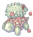 | Ominous Permeter | 157 | 508,355 | Small / Brute / Neutral 2 |

|
Ominous Freezer | 159 | 549,071 | Small / Brute / Water 2 |

|
Ominous Solider | 161 | 592,310 | Small / Brute / Earth 2 |

|
Ominous Heater | 162 | 527,390 | Small / Brute / Fire 2 |

|
 Ominous Turtle General Ominous Turtle General
|
165 | 11,628,549 | Large / Brute / Earth 2 |
MVP Spawn
Para invocar al MVP Ominous Turtle General, se deben matar 1000 mobs en el segundo piso del dungeon. Habrá un anuncio global en el mapa en cuanto aparezca.
Cartas
| Carta | Va en: | Efecto |
|---|---|---|
| Arma | Incrementa el daño crítico en 10%. Cuando esta equipado en un látigo, instrumento musical, libro, espada de 2 manos o lanza de 2 manos, CRIT +5. | |
| Headgear | Int +1, Max SP +80. Max SP + 10 cada 2 niveles de refine.
Max HP +1% por cada 3 niveles de refine de la Armadura. | |
| Shoes | Max HP + 10%, Str +2. Si el nivel base es mayor o igual a 160, incrementa el daño de | |
| Armadura | Max HP +10%, DEF +50. Max HP +1% por cada 3 niveles de refine. | |
| Accessorio | CRIT +3, incrementa el daño crítico en 5%.
CRIT +2 | |
| Escudo | DEF +30, MDEF +5. Reduce el daño recibido de los monstruos de todos los tamaños en un 25%.
Reduce el daño recibido de los monstruos de todos los tamaños en un 5% adicional. |


Equipo

Cerca de la entrada de Illusion of Abyss encontrarás a Equipment Researcher (alberta 225/28) En este dungeon, el se encarga de fabricar los Objetos Illusion.
Para cada objeto, te pedirá Illusion Stones, un Equipo Base (que puede requerir cierto nivel de refine) y objetos varios que caen por drop dentro del dungeon.
Aquí puedes encontrar los objetos que puedes crear, su efecto y que piden para ser fabricados:
| Objeto | Nombre | Descripción | Creación |
|---|---|---|---|

|
 Illusion Immaterial Sword [2] Illusion Immaterial Sword [2]
|
Indestructible (excepto en intentos de refine).
MATK +100.
|
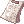 6 Logbooks |
| 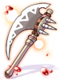 | Illusion War Axe [2] |
Str +2, Dex +2, Luk +2.
ATK + 40.
|
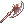 +7 War Axe [1]
|

|
Illusion Pole Axe [2] |
Str +3, Int +2, Dex +2. En combo con ATK +40. Tipo de Equipo: Spear Equipable por: Swordsman Class. |
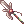 +7 Pole Axe [1]
|
| 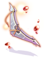 | Illusion Wing Shuriken [2] |
DEX +2.
ATK +50.
|
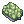 200 Old Turtle Shells |

|
Illusion Iron Driver [2] |
Incrementa el daño de
Incrementa la velocidad de ataque en 10% (reduce el After Attack Delay un 10%). Tipo de Equipo: Mace |
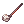 +7 Iron Driver
|

|
 Illusion Fancy Flower [1] Illusion Fancy Flower [1]
|
MATK + 1%.
|
|


 +7
+7 


 +7
+7 

 +7
+7  50
50